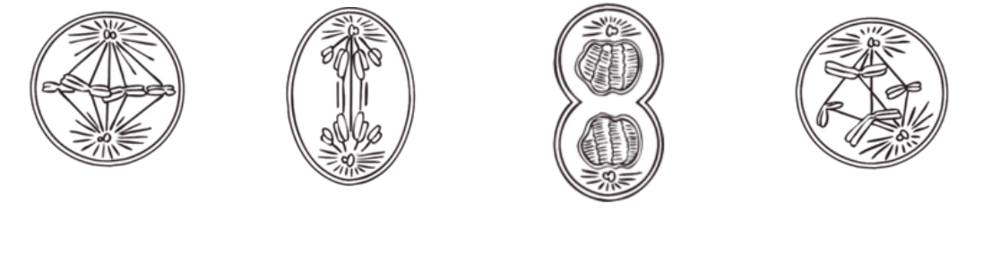
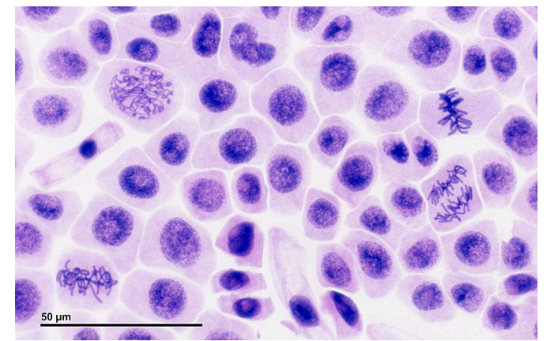
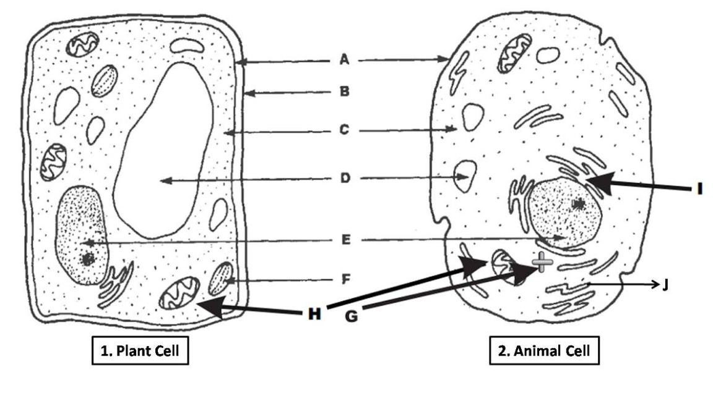

Chapter 4: Systems of Living Things
Cell theory | Plant and animal cells | Cell cycle | Cancer | Stem cells | Tissues | Homework diagrams
1. Cell Theory and Cell Types
Cell Theory
- All living things are made of one or more cells.
- The cell is the simplest unit that carries out life processes.
- All cells come from pre-existing cells.
Prokaryote vs. Eukaryote
| Prokaryote | Eukaryote |
|---|---|
| No nucleus | Has nucleus |
| No membrane-bound organelles | Has membrane-bound organelles |
| Bacteria and archaea | Plants, animals, fungi, protists |
2. Organelles
| Organelle | Function |
|---|---|
| Nucleus | Stores DNA and controls cell activities. |
| Nuclear membrane | Controls what enters and exits the nucleus. |
| Cytoplasm | Gel-like material that suspends organelles. |
| Ribosomes | Make proteins. |
| Endoplasmic reticulum | Transports materials, especially proteins. |
| Golgi body | Processes and packages materials for transport/removal. |
| Vesicles | Small sacs that transport materials. |
| Vacuole | Stores water and nutrients; large in plant cells. |
| Mitochondria | Release usable energy through cellular respiration. |
| Cell membrane | Semi-permeable boundary controlling entry and exit. |
| Cell wall | Rigid plant-cell support made of cellulose. |
| Chloroplast | Contains chlorophyll and performs photosynthesis. |
Trap: plant cells still need mitochondria because photosynthesis stores energy in glucose, but mitochondria release usable energy from glucose.
3. Cell Division and Cell Cycle
Why Cells Divide
- Reproduction
- Growth
- Repair
Cells divide instead of just getting bigger because large cells have lower surface area relative to volume, making diffusion and osmosis less efficient.
Cell Cycle Order
Interphase → Prophase → Metaphase → Anaphase → Telophase → Cytokinesis
| Stage | Key clue |
|---|---|
| Interphase | Cell grows and copies DNA. |
| Prophase | Nuclear membrane dissolves; chromosomes become visible. |
| Metaphase | Chromosomes line up in the middle. |
| Anaphase | Sister chromatids separate. |
| Telophase | Nuclear membranes reform. |
| Cytokinesis | Cell splits into two daughter cells. |
4. Cancer, Stem Cells, and Tissues
Cancer
Cancer is uncontrolled cell growth and division caused by DNA mutations. It may start as a tumour and can spread by metastasis.
Prevention and early detection: avoid smoking, use sun protection, maintain healthy habits, know family history, get screened.
Stem Cells
Embryonic stem cells: can become any cell type.
Adult stem cells: found in the body and usually become a limited range of cell types.
Tissue Types
| Tissue | Structure / clue | Function |
|---|---|---|
| Epithelial | Thin sheets covering surfaces and lining organs | Protection; reduces water loss |
| Connective | Cells in matrix; examples include bone, blood, fat | Support, protection, connection, transport |
| Muscle | Cells with actin and myosin that contract | Movement |
| Nerve | Neurons and supporting cells | Transmit electrical signals |
Homework-Specific High-Risk Points
Q5-Q8: Cell Cycle Diagram Questions


| Description / diagram clue | Answer |
|---|---|
| New cell wall begins to form | Cytokinesis, especially in plant cells |
| Nuclear membrane dissolves | Prophase |
| Daughter chromosomes begin to separate | Anaphase |
| Cell has pinched into two cells | Cytokinesis complete |
| Cell grows and copies DNA | Interphase |
| Chromosomes aligned in the middle | Metaphase |
| Q6 pictures from left to right | Metaphase, Anaphase, Telophase/Cytokinesis, Prophase |
| Q7 sample type | Likely plant tissue because the cells have rigid, box-like cell walls. |
Q9-Q13: Written Response Traps
| Item | High-risk answer |
|---|---|
| Antibiotic blocks bacterial DNA copying | Bacteria cannot reproduce, so the infection stops spreading. |
| Bacteria vs human cells | Bacteria are prokaryotic; human cells are eukaryotic with nuclei and membrane-bound organelles. |
| Cancer vs normal cells | Cancer cells ignore normal checkpoints, divide uncontrollably, and may form tumours or spread. |
| Early cancer can be overlooked | Early tumours may be small, localized, and have few symptoms; screening helps catch them earlier. |
| Embryonic vs adult stem cells | Embryonic stem cells can differentiate into almost any cell; adult stem cells have more limited differentiation. |
| Blood as connective tissue | Blood has cells suspended in plasma and connects body systems by transporting gases, nutrients, wastes, and signals. |
Q14: Organelle Diagram Check

| Label | Likely organelle | Function |
|---|---|---|
| A | Cell membrane | Controls what enters and exits the cell. |
| B | Cell wall | Rigid plant-cell support and protection. |
| C | Cytoplasm | Suspends organelles and provides water/nutrients. |
| D | Vacuole | Stores water and nutrients; large in plant cells. |
| E | Nucleus | Stores DNA and controls cell activities. |
| F | Chloroplast | Performs photosynthesis. |
| G | Vesicle | Small sac for transporting materials. |
| H | Mitochondrion | Releases usable energy through cellular respiration. |
| I | Endoplasmic reticulum | Transports materials around the cell. |
| J | Golgi body | Processes and packages materials. |
Diagram caution: Q14 labels are based on the arrows in the homework image; if the teacher's original slide has a labelled version, use it as the final authority.